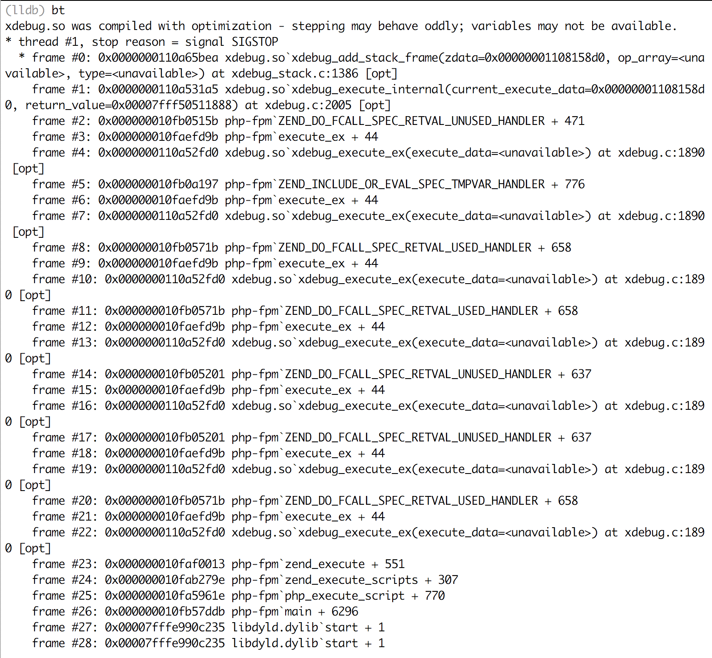

好久没有折腾环境，上周在本地搭建环境，php-fpm起了，nginx也起了，访问接口都是502。看nginx日志，说是后端过早关闭了连接。
1 | upstream prematurely closed connection while reading response header from upstream, client: 127.0.0.1, server: [dev.meijiabang.cn](http://dev.meijiabang.cn/), request... |
这个问题之前没碰过，感觉要凉了，还是先问问小伙伴吧….于是找ben对比检查下配置文件，各种改配置文件(nginx的rewrite，php-fpm.conf)，我擦，还是502，还是SIGSEGV。
那就只能Google了…
半天过去了，我还是擦，网上都是说段错误，内存错误，可参考价值不高，倒是有一个挺像。
https://github.com/zendtech/ZendOptimizerPlus/issues/176
鸟哥的回答，说要看看backtrace。
突然灵光一闪，貌似之前一直想通过core文件调试问题，鸟哥这篇博客有所介绍（http://www.laruence.com/2011/06/23/2057.html）。
很多时候都是这样，看别人写博客，记录踩过的坑，当时总想着怎么重现作者的坑，也一同吸取教训。但往往难以重现。
然而，当自己踩到的时候，常常不是正确的时候，怎么就这时候出现呢…
1.ABOUT SIGSEGV
在POSIX兼容的平台上，SIGSEGV是当一个进程执行了一个无效的内存引用，或发生段错误时发送给它的信号)。
2.ABOUT core
core 文件是大多数 UNIX 系统实现的一种特性，当进程崩溃时，操作系统会将进程当前的内存映像和一部分相关的调试信息写入 core 文件，方便人们后面对问题进行定位。
操作系统里面有很多信号（每个信号都有一个名字，且已SIG开头，用正整数表示，Linux系统一般在<bits/signum.h>头文件中定义），分别代表了不同的含义，在Linux系统中，我们可以通过shell命令 kill -l 来查看系统有哪些信号。操作系统收到信号时，内核会按照以下三种方式之一去对信号进行处理：
- 忽略此信号。大多数的信号都可以用这种方式去处理，即内核收到此信号时，对进程不做任何处理，直接忽略。但是SIGKILL和SIGSTOP这两个信号不能被忽略，因为它们向超级用户提供了使进程终止或停止的可靠方法。
- 捕捉信号。即我们向内核注册一个信号处理函数，当内核收到某个信号时，就去调用注册的信号处理函数对信号进行处理。比如我们经常使用的命令kill默认发的是SIGTERM终止信号。注意，不能捕捉SIGKILL和SIGSTOP信号。
- 执行默认动作。每个系统都有一套自己默认的信号处理函数，即如果我们不显式的去捕捉信号，那内核收到信号时，要么忽略此信号，要么执行默认的操作。可以理解为操作系统有自己默认的信号处理函数。
Linux信号有很多，这里我们列举出默认动作中可能产生core文件的信号（摘自《UNIX环境高级编程》第二版）
| 信号名字 | 说明 | 默认动作 |
|---|---|---|
| SIGABRT | 异常终止（调用abort函数产生此信号） | 终止+core |
| SIGBUS | 硬件故障，比如出现某些内存故障 | 终止+core |
| SIGEMT | 硬件故障 | 终止+core |
| SIGFPE | 算术异常，比如除以0，浮点溢出等 | 终止+core |
| SIGILL | 非法硬件指令 | 终止+core |
| SIGIOT | 硬件故障 | 终止+core |
| SIGQUIT | 终端退出符，比如Ctrl+C | 终止+core |
| SIGSEGV | 无效内存引用 | 终止+core |
| SIGSYS | 无效系统调用 | 终止+core |
| SIGXCPU | 超过CPU限制（setrlimit） | 终止+core/忽略 |
| SIGXFSZ | 超过文件长度限制（setrlimit） | 终止+core/忽略 |
并非所有场景我们都希望可以生成core文件，因为影响性能。所以还需要重新打开系统的core文件开关，像下图第2个红框，才表示有core文件生成。
有了core文件，还需要会gdb调试才行，不会gdb，会lldb也ok，因为Mac下面默认配的是lldb，于是我就lldb了一下生成的core文件(lldb core.xxxx)；

如果想真正理解这个backstrace，还要花点时间，但大致能知道，这绝壁是xdebug的问题….（execute_data=
果断注释掉xdebug，重启php-fpm，哈哈，502消失，各种接口各种访问都正常，真是超级爽。
那问题来了，xdebug是什么问题呢？是配置问题吗，也不是。记得之前是装php5.6还是7的时候装的xdebug，现在是php7.1，于是马上重新编译安装一个跟7.1版本对应的xdebug，不出所料，访问也正常，xdebug也能用。
（完）